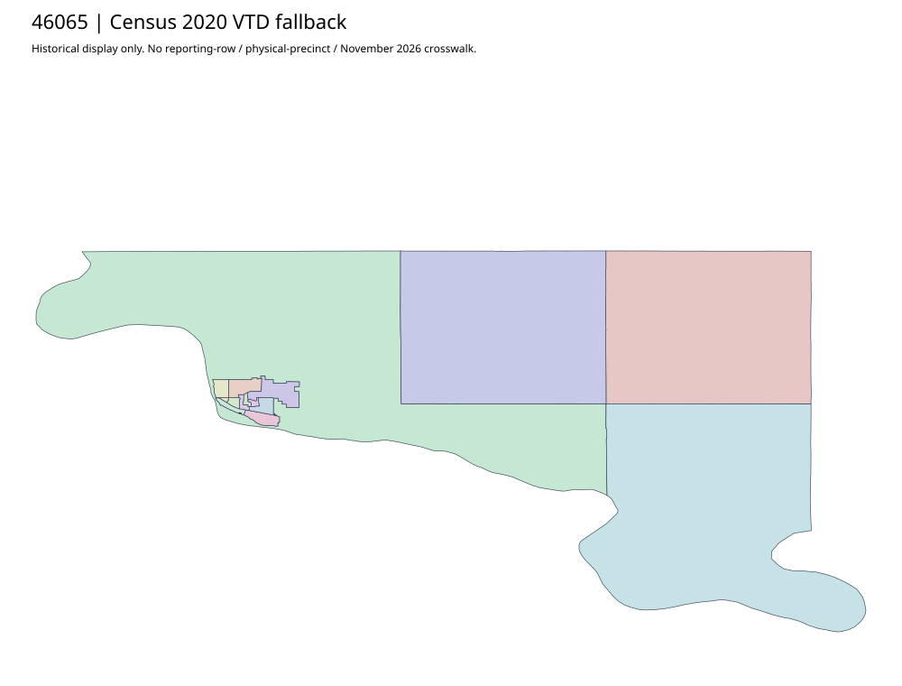

304 ordered indexHughes | 46065
Complete official Elections parent describes countywide vote centers. Bounded parent and linked county pages expose no acquired precinct-boundary original. Census2020 has15 historical VTDs; do not split the workbook aggregate/absentee observations among those polygons or interpret center addresses as territories.
4 priority / 6 full historical observations. Parent is a summary ancestor, not additive to leaves. No physical feature matches or current reporting crosswalk approved.
Acquired shared-parent assets
No complete county precinct-map original acquired from this bounded chain. Use qualified fallback; roster/landing/error bodies are retained as evidence.
Census2020 fallback
15 native historical VTD features. Entire785-feature ZIP original retained once, all66 counties. Yankton has one countywide VTD. No current/reporting allocation. complete original gzip

Full binary/attribute/geometry QA
Observed authority/acquisition routes
Complete SOS authority fields including original blank/masked values: parent inventory. No contacts were sent.
Ordered full children
- Absentee Precinct | 2875 source votes | priority
- 2. New Life Assembly of God Church | 2312 source votes | priority
- 1. Faith Lutheran Church | 2125 source votes | priority
- 3. Capitol Lake Visitors Center | 816 source votes | priority
- 5. Blunt City Hall | 200 source votes | remainder
- 6. Harrold City Auditorium | 106 source votes | remainder